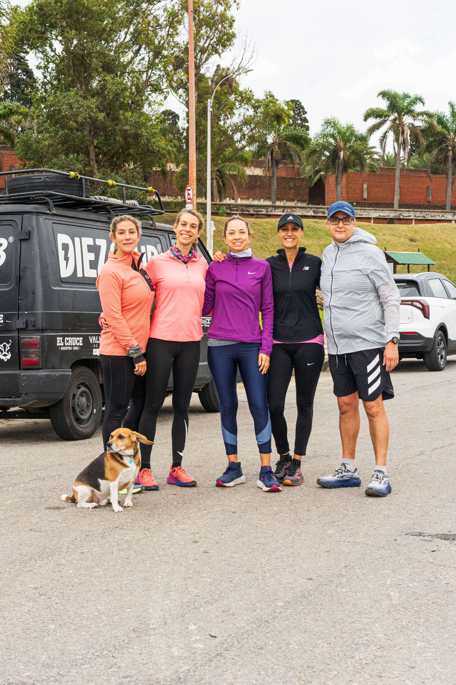
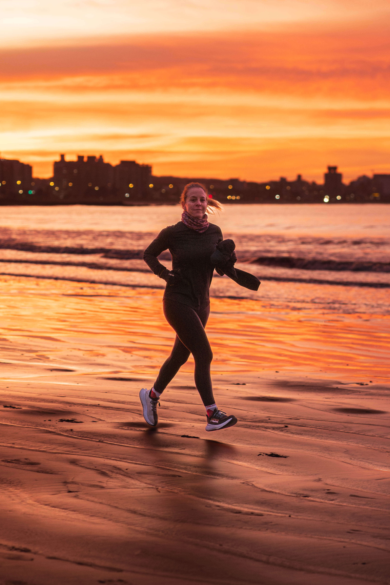
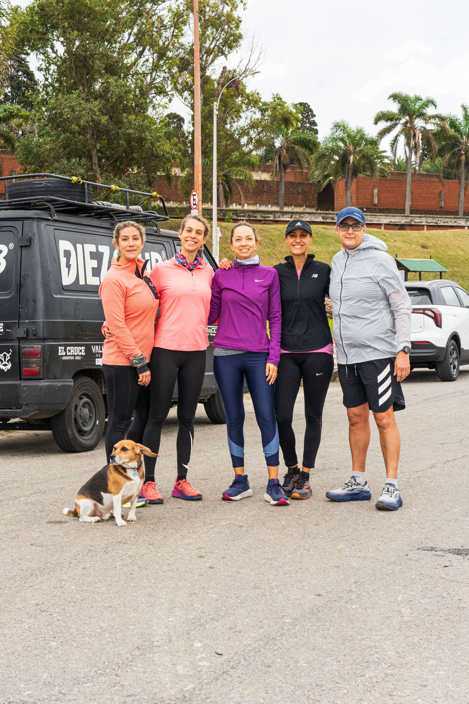
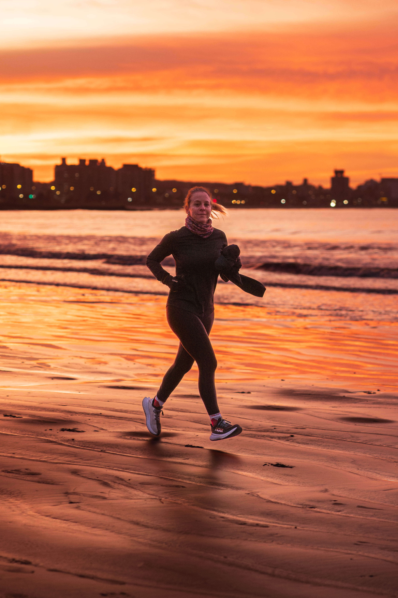

Cada paso en los senderos es un paso hacia el crecimiento personal. Desde la preparación física hasta el sacrificio y el desafío de completar cada recorrido, en Diez Club entendemos que la verdadera fortaleza se encuentra al salir de nuestra zona de confort. Aquí, exploramos nuevos límites, descubrimos nuestra fuerza interior y cultivamos la confianza en nosotros mismos. Únete a nosotros para explorar más allá de lo ordinario, donde cada kilómetro y cada altitud explorada nos llevan a conocer nuestras verdaderas capacidades. En Diez Club, no solo corremos juntos, sino que crecemos juntos como individuos, inspirados por la belleza de la naturaleza y motivados por el deseo de superación personal.
| Día | Hora | Lugar |
|---|---|---|
| Lunes, Miércoles y Viernes | 7:00 a 9:00 | Museo Oceanográfico |
| Lunes y Miércoles | 18:30 a 21:00 | Rambla y 26 de Marzo |
| Martes y Jueves | 5:30 a 10:30 y 18:30 a 21:00 | Museo Oceanográfico |
| Sábados | 6:50 a 10:00 | Museo Oceanográfico |
Diez Club es agente de inscripción para la carrera El Cruce...
Contáctanos por WhatsApp 



Nuestro grupo está compuesto de corredores de todos los niveles, los planes de entrenamiento se adecuan a las necesidades de cada uno
Nuestros entrenamientos duran una hora y cuarto aproximadamente